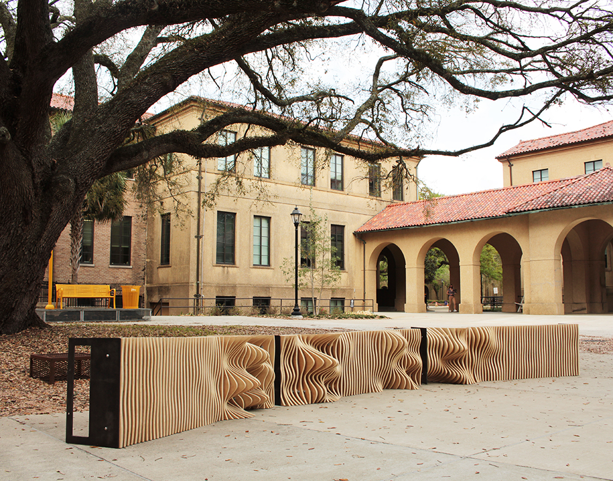
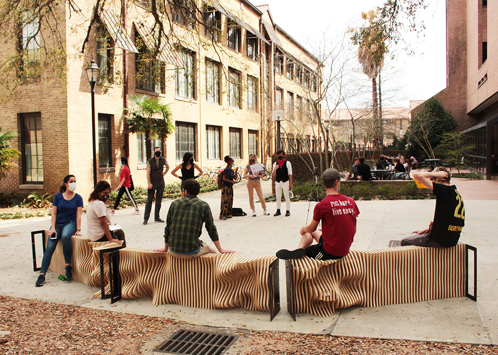
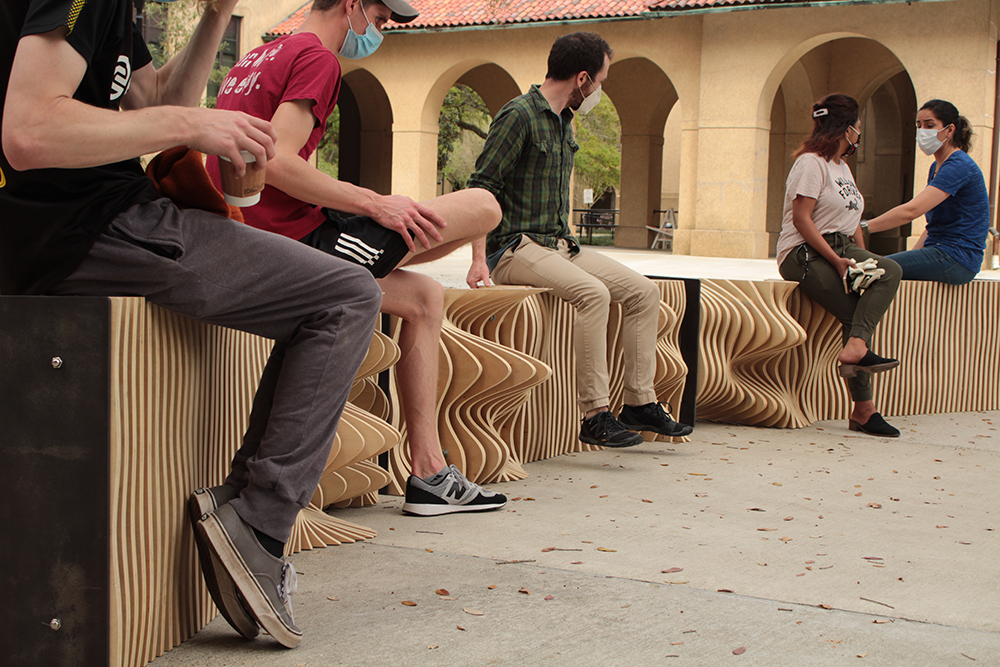

2021, Parametric Design
 
This bench - digitally fabricated using CNC router and plasma cutter - represents the waveform of three lines of the poem Diamonds in Dystopia by Vincent Cellucci:
---irrigating minds
-------the one prototype for change
------------more giving systems
Team Leads: Brendan Harmon & Hye Yeon Nam
Team: Derick Ostrenko, Vincent Celluci, Zak Berkowitz, Daniel Davis, Nasrin Iravani, Matthew Cranney